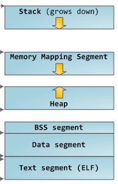
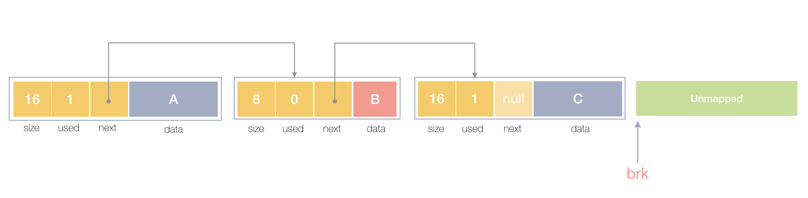

26 Aug, 2020
This tutorial needs understanding of Pointers as prerequisites.
Malloc is a void* return type function in C. Malloc helps to allocate dynamic memory from the heap.
malloc() takes a single argument or the amount of memory to allocate in bytes and returns a pointer to a block of memory.
malloc's functional syntax,
void *malloc(size_t size);
when a program wants memory space from malloc, malloc asks sbrk() to increment the heap size and returns a pointer
to the start of the new region on the heap.
sbrk() is a Unix/Linux based system call, actually sbrk is a memory management
system call.
sbrk() increments the program's data space by increment bytes.Calling sbrk() with an increment of 0 can be
used to find the current location of the program break.
Let's come back to the malloc.
memory layout of a program.

image source: Internet
lets know malloc via compiling a program,
#include <stdio.h>
#include <stdlib.h>
int main(void) {
int *p;
printf("Pointer before malloc(): %p\n", p);
p = (int *)malloc(sizeof(int)*100);
printf("Pointer after malloc(): %p\n", p);
return (0);
}
Output
Pointer before malloc(): (nil)
Pointer after malloc(): 0x561099026280
p = (int *)malloc(sizeof(int)*100);
Since the size of int is 4 bytes, this statement will allocate 400 bytes of memory and the pointer p holds the
address of the first byte in the allocated memory.
simple system call based malloc implementation.
#include <assert.h>
#include <string.h>
#include <sys/types.h>
#include <unistd.h>
void *malloc(size_t size) {
void *p = sbrk(0);
void *request = sbrk(size);
if (request == (void*) -1) {
return NULL; // sbrk failed.
}
else {
assert(p == request); // Not thread safe.
return p;
}
}
Code source: danluu.com
What if you want to make your own malloc function?
"What I cannot create, I do not understand”.
- Richard Feynman
When we ask for some chunks of bytes from malloc. malloc always return contiguous block of memory from the heap.The heap
region we get from OS/Kernel has to be contiguous , so we cannot return a block of memory in the middle to the OS.
How do you implement a memory allocator?
Good question, Let's implement one
First we need to know,The main challenges are,
- Need to minimize fragmentation (i.e. maximize memory utilization)
- Need high performance
- Fiddly implementation (lots of pointer manipulation using linked lists and pointer arithmetic)
A memory allocator needs to keep track every memory chunk bytes are currently allocated or free. We can assume that
our heap memory as list of blocks where each block is either allocated(free flag set to 0) or free (free flag set to 1).
We make memory blocks to track next free or used/unused memory chunk. actually we store meta-data information into this
structure block.

Lets create a memory block for storing meta-deta utilizing C style struct
struct block {
size_t size;
int free; // sometime also known as used flag
struct block *next;
}
size define number of bytes to be allocated.
free represents that this memory chunk is free or unused.
*next pointer store address of next memory chunk of heap.
char memory[20000];
This is our memory or temporary heap, we are assuming that our heap or memory size is 20000 bytes. (if char takes
1 byte in your system)
struct block *freeList = (void*)memory;
*freeList is a block type pointer it always points to any currently free chunk of memory. actually *freeList pointer will point
to the start of the linked list of metadata blocks.The starting address of the array (memory) should be casted to type void so that we
are able< to allocate blocks of memory which are of different datatypes.(int, char, float etc.)
void initalize() {
freeList->size = 20000 - sizeof(struct block);
freeList->free = 1;
freeList->next = NULL;
}
This function intialize system memory or make *freeList to ready.
Here we defines our first free memory chunk
size of 20000 bytes - sizeof(block). and we intialize
this memory block as free by freeList->free = 1. and next = NULL
because there is no other next metadata block ye
void *mymalloc(size_t size) {
This is our main booming function.
struct block *curr,*prv;
void *result;
if(!freeList->size) {
initalize();
printf("system memory or linked list initalized.!\n");
}
curr = freeList;
while((curr->size < size || curr->free==0) && curr->next!=NULL) {
prv = curr;
curr = curr->next;
printf("moving block by block to find first fit slot\n");
}
if(curr->size == size) {
curr->free = 0;
result = (void*)curr;
printf("Found exact fit slot!\n");
return result;
}
else if(curr->size > size+sizeof(struct block)) {
split(curr,size);
curr++;
result = (void*)curr; // curr + sizeof(block)
printf("allocated memory with split\n");
return result;
}
else{
printf("not enough memory found.!\n");
return NULL;
}
}